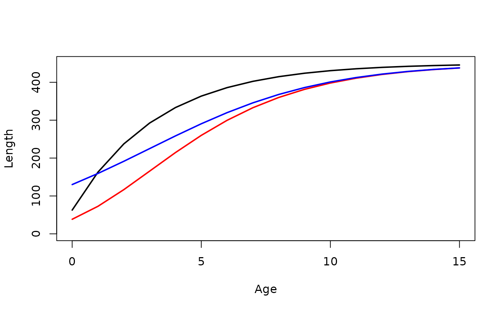
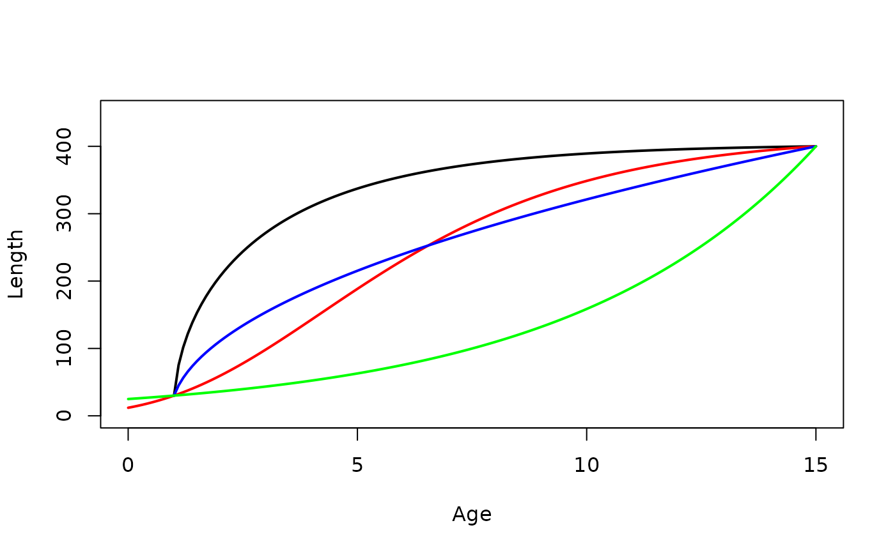
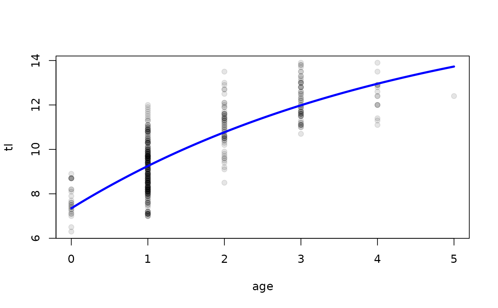

Creates a function for a specific parameterization of the von Bertalanffy, Gompertz, logistic, Richards, Schnute, and Schnute-Richards growth functions.
Source:R/makeGrowthFun.R
makeGrowthFun.RdCreates a function for a specific parameterizations of the von Bertalanffy, Gompertz, logistic, Richards, and Schnute-Richards growth functions. The resulting function can be used to calculate length(s) from age(s) and specific growth function parameters, which is useful for model-fitting and plotting. Equations for each parameterization are shown in the details and with showGrowthFun to see the equations for each growth function.
Usage
makeGrowthFun(
type = c("von Bertalanffy", "Gompertz", "logistic", "Richards", "Schnute",
"Schnute-Richards"),
param = 1,
pname = NULL,
case = NULL,
simple = FALSE,
msg = FALSE
)Arguments
- type
A single string (i.e., one of “von Bertalanffy”, “Gompertz”, “logistic”, “Richards”, “Schnute”, “Schnute-Richards”) that indicates the type of growth function to show.
- param
A single numeric that indicates the specific parameterization of the growth function. Will be ignored if
pnameis non-NULL. See details.- pname
A single character that indicates the specific parameterization of the growth function. If
NULLthenparamwill be used. See details.- case
A numeric that indicates the specific case of the Schnute function to use.
- simple
A logical that indicates whether the function will accept all parameter values in the first parameter argument (
=FALSE; DEFAULT) or whether all individual parameters must be specified in separate arguments (=TRUE). See examples.- msg
A logical that indicates whether a message about the growth function and parameter definitions should be output (
=TRUE) or not (=FALSE; DEFAULT).
Value
Returns a function that can be used to predict fish size given a vector of ages and values for the growth function parameters and, in some parameterizations, values for constants. The result should be saved to an object that is then the function name. When the resulting function is used, the parameters are ordered as shown when the definitions of the parameters are printed after the function is called (if msg=TRUE). If simple=FALSE (DEFAULT), then the values for all parameters may be included as a vector in the first parameter argument (but in the same order). Similarly, the values for all constants may be included as a vector in the first constant argument (i.e., t1). If simple=TRUE, then all parameters and constants must be declared individually. The resulting function is somewhat easier to read when simple=TRUE, but is less general for some applications.
Details
The von Bertalanffy parameterizations for length and annual age data are (synonyms are "Beverton-Holt" for "Traditional", "von Bertalanffy" for "Original", "Ogle" for "Ogle-Isermann", and "Laslett" or "Polacheck" for "Double"):
| param | pname | Equation |
| 1 | Traditional | \(E(L_t)=L_\infty\left(1-e^{-K(t-t_0)}\right)\) |
| 2 | Original | \(E(L_t)=L_\infty - (L_\infty-L_0)~e^{-Kt}\) |
| 3 | Gallucci-Quinn | \(E(L_t)=\frac{\omega}{K}\left(1-e^{-K(t-t_0)}\right)\) |
| 4 | Mooij | \(E(L_t)=L_\infty - (L_\infty-L_0)~e^{-\frac{\omega}{L_\infty}t}\) |
| 5 | Weisberg | \(E(L_t)=L_\infty\left(1-e^{-log(2)\frac{t-t_0}{t_{50}-t_0}}\right)\) |
| 6 | Ogle-Isermann | \(E(L_t)=L_r + (L_\infty-L_r)~e^{-e^{-K(t-t_r)}}\) |
| 7 | Schnute | \(E(L_t)=L_1+(L_3-L_1)\frac{1-e^{-K(t-t_1)}}{1-e^{-K(t_3-t_1)}}\) |
| 8 | Francis | \(E(L_t)=L_1+(L_3-L_1)\frac{1-r^{2\frac{t-t_1}{t_3-t_1}}}{1-r^2}\) |
| where \(r=\frac{L_3-L_2}{L_2-L_1}\) | ||
| 9 | Double | \(E(L_t)=L_\infty\frac{\left(1-e^{-K_2(t-t_0)}\right)\left(1+e^{-b(t-t_0-a)}\right)}{\left(1+e^{ab}\right)^{-\frac{K_2K_1}{b}}}\) |
The von Bertalanffy parameterizations for length and seasonal age data are (synonyms are "Somers1" for "Somers"):
| param | pname | Equation |
| 10 | Somers | \(E(L_t)=L_\infty\left(1-e^{-K(t-t_0)-S(t)-S(t_0)}\right)\) |
| where \(S(t)=\frac{CK}{2\pi \text{sin}(2\pi(t-t_s))}\) | ||
| 11 | Somers2 | \(E(L_t)=L_\infty\left(1-e^{-K(t-t_0)-R(t)+R(t_0)}\right)\) |
| where \(R(t)=\frac{CK}{2\pi \text{sin}(2\pi(t-WP+0.5))}\) | ||
| 12 | Pauly | \(E(L_t)=L_\infty\left(1-e^{-K'(t'-t_0)-V(t')+V(t_0)}\right)\) |
| where \(V(t)=\frac{K'(1-NGT)}{2\pi}\text{sin}\left(\frac{2\pi}{(1-NGT)(t-t_s)}\right)\) |
The von Bertalanffy parameterizations for tag-recapture data are (synonyms are "Fabens1" for "Fabens" and "Wang1" for "Wang"):
| param | pname | Equation |
| 13 | Fabens | \(E(L_r-L_m)=(L_\infty-L_m)\left(1-e^{-K\delta t}\right)\) |
| 14 | Fabens2 | \(E(L_r)=L_m + (L_\infty-L_m)\left(1-e^{-K\delta t}\right)\) |
| 15 | Wang | \(E(L_r-L_m)=(L_\infty+\beta(\bar{L}_m-L_m)-L_m)\left(1-e^{-K\delta t}\right)\) |
| 16 | Wang2 | \(E(L_r-L_m)=(\alpha+\beta L_m\left(1-e^{-K\delta t}\right)\) |
| 17 | Wang3 | \(E(L_r)=L_m+(\alpha+\beta L_m\left(1-e^{-K\delta t}\right)\) |
| 18 | Francis2 | \(E(L_r-L_m)=\left[\frac{L_2g_1-L_1g_2}{g_1-g_2}-L_m\right]\left[1-\left(1+\frac{g_1-g_2}{L_1+L_2}\right)^{dt}\right]\) |
The von Bertalanffy parameterizations for seasonal tag-recapture data are:
| param | pname | Equation |
| 19 | Francis3 | \(E(L_r-L_m)=\left[\frac{L_2g_1-L_1g_2}{g_1-g_2}-L_m\right]\left[1-\left(1+\frac{g_1-g_2}{L_1+L_2}\right)^{t_2-t_1+S(t_2)-S(t_1)}\right]\) |
| where \(S(t)=u\text{sin}\left(\frac{2\pi(t-w)}{2\pi}\right)\) |
The Gompertz parameterizations for length and annual age data are (synonums are "Gompertz" for "Original", "Quinn-Deriso1" for "Ricker2", and "Quinn-Deriso2" for "Ricker3"):
| param | pname | Equation |
| 1 | Original | \(E(L_t)=L_\infty e^{-e^{a_1-g_it}}\) |
| 2 | Ricker1 | \(E(L_t)=L_\infty e^{-e^{-g_i(t-t_i)}}\) |
| 3 | Ricker2 | \(E(L_t)=L_0 e^{a_2(1-e^{-g_it})}\) |
| 4 | Ricker3 | \(E(L_t)=L_\infty e^{-a_2e^{-g_it}}\) |
| 5 | Quinn-Deriso3 | \(E(L_t)=L_\infty e^{-\frac{1}{g_i}e^{-g_i(t-t_0)}}\) |
The parameterizations and parameters for the Gompertz function are varied and confusing in the literature (common sources for Gompertz parameterizations used in fisheries are listed in the references below). To address this confusion a uniform set of parameters is used here, which makes a direct comparison to the literature difficult. Some comments to aid comparisons to the literature are below.
Within FSA, \(L_0\) is the mean length at age 0, \(L_\infty\) is the mean asymptotic length, \(t_i\) is the age at the inflection point, \(g_i\) is the instantaneous growth rate at the inflection point, and \(a_1\) and \(a_2\) are nuisance parameters with no real-world interpretations. In addition, it is implied that \(t_0\) is the the hypothetical age at a mean length of 0 as it is in the von Bertalanffy functions, but the Gompertz function has a horizontal asymptote at length=0 such that there is no "x-intercept" which suggests that that definition of \(t_0\) is not correct.
In the Ricker (1979)[p. 705] functions (parameterizations 2-4), \(a\) here is \(k\) there and \(g_i\) here is \(g\) there. Also note that their \(w\) is \(L\) here. In the Ricker (1979) functions as presented in Campana and Jones (1992), \(a\) here is \(k\) there and \(g_i\) here is \(G\) there. Also note that their \(X\) is \(L\) here.
The function in Ricker (1975)[p. 232] is the same as the third parameterization where \(a_2\) here is \(G\) there and \(g_i\) here is \(g\). Also their \(w\) is \(L\) here.
In the Quinn and Deriso (1999) functions (parameterizations 3-5), \(a\) here is \(\frac{\lambda}{K}\) there and \(g_i\) here is \(K\) there. Also note that their \(Y\) is \(L\) here.
The function in Quist et al. (2012)[p. 714] is the same as parameterization 2 where \(g_i\) here is \(G\) there and \(t_i\) here is \(t_0\) there.
The function in Katsanevakis and Maravelias (2008) is the same as parameterization 2 where \(g_i\) here is \(k_2\) there and \(t_i\) here is \(t_2\) there.
The Gompertz parameterizations for tag-recapture data are (synonyms are "Troynikov1" for "Troynikov"):
| param | pname | Equation |
| 6 | Troynikov | \(E(L_r-L_m)=L_{\infty}\left[\frac{L_m}{L_{\infty}}\right]^{e^{-g_i\Delta t}}-L_m\) |
| 7 | Troynikov2 | \(E(L_r)=L_{\infty}\left[\frac{L_m}{L_{\infty}}\right]^{e^{-g_i\Delta t}}\) |
The logistic parameterizations for length and annual age data are:
| param | pname | Equation |
| 1 | Campana-Jones1 | \(E(L_t)=\frac{L_\infty}{1+e^{-g_{-\infty}(t-t_i)}}\) |
| 2 | Campana-Jones2 | \(E(L_t)=\frac{L_\infty}{1+ae^{-g_{-\infty}t}}\) |
| 3 | Karkach | \(E(L_t)=\frac{L_0L_\infty}{L_0+(L_\infty - L_0)e^{-g_{-\infty}t}}\) |
The logistic parameterizations for tag-recapture data are
| param | pname | Equation |
| 4 | Haddon | \(E(L_r-L_m)=\frac{\Delta L_{max}}{1+e^{log(19)/frac{L_m-L_{50}}{L_{95}-L_{50}}}}\) |
The Richards parameterizations for length and annual age data are
| param | pname | Equation |
| 1 | Tjorve4 | \(E(L_t)=L_\infty\left[1-\frac{1}{b}e^{-k(t-t_i)}\right]^b\) |
| 2 | Tjorve3 | \(E(L_t)=L_\infty\left(1+e^{-k(t-t_0)}\right)^b\) |
| 3 | Tjorve7 | \(E(L_t)=L_\infty\left[1+\left(\left(\frac{L_0}{L_\infty}\right)^{\frac{1}{b}}-1\right)e^{-kt}\right]^b\) |
Only 4-parameter parameterizations from Tjorve and Tjorve (2010) that seemed useful for modeling fish growth are provided here. In Tjorve and Tjorve (2010) their \(A\), \(k\), \(W_0\), \(T_i\),and \(d\) are \(L_\infty\), \(k\), \(L_0\), \(t_i\), and \(b\), respectively, here (in FSA). The number at the end of respect pname corresponds to the equation number in Tjorve and Tjorve (2010). However, note that I modified \(b\) in parameterizations 2 and 3 so that each equation appeared as \(L_\infty\) times a quantity raised to a simple (i.e., non-negative and not a fraction) power. Further note that previous versions of FSA had two other parameterizations of the Richards function that differed only from parameterization 1 by simple additions or multiplications of \(b\). As \(b\) has no biological meaning, these parameterizations were removed.
The four cases for the Schnute model for simple length and annual age data are
| Case | Situation | Equation |
| 1 | \(a\neq 0\), \(b\neq 0\) | \(E(L_t)=\left[L^b_1+(L^b_3-L^b_1)\frac{1-e^{-a(t-t_1)}}{1-e^{-a(t_3-t_1)}}\right]^{\frac{1}{b}}\) |
| 2 | \(a\neq 0\), \(b=0\) | \(E(L_t)=L_1e^{log\left(\frac{L_3}{L_1}\right)\frac{1-e^{-a(t-t_1)}}{1-e^{-a(t_3-t_1)}}}\) |
| 3 | \(a=0\), \(b\neq 0\) | \(E(L_t)=\left[L^b_1+(L^b_3-L^b_1)\frac{t-t_1}{t_3-t_1}\right]^{\frac{1}{b}}\) |
| 4 | \(a=0\), \(b=0\) | \(E(L_t)=L_1e^{log\left(\frac{L_3}{L_1}\right)\frac{t-t_1}{t_3-t_1}}\) |
The Schnute-Richards model for simple length and annual age data is \(E(L_t)=L_\infty\left(1-ae^{-kt^c}\right)^{1/b}\). Note that this function is slightly modified (a \(+\) was changed to a \(-\) so that \(a\) is positive) from the original in Schnute and Richards (1990).
References
Ogle, D.H. 2016. Introductory Fisheries Analyses with R. Chapman & Hall/CRC, Boca Raton, FL.
Campana, S.E. and C.M. Jones. 1992. Analysis of otolith microstructure data. Pages 73-100 In D.K. Stevenson and S.E. Campana, editors. Otolith microstructure examination and analysis. Canadian Special Publication of Fisheries and Aquatic Sciences 117. [Was (is?) from https://waves-vagues.dfo-mpo.gc.ca/library-bibliotheque/141734.pdf.]
Fabens, A. 1965. Properties and fitting of the von Bertalanffy growth curve. Growth 29:265-289.
Francis, R.I.C.C. 1988. Are growth parameters estimated from tagging and age-length data comparable? Canadian Journal of Fisheries and Aquatic Sciences, 45:936-942.
Gallucci, V.F. and T.J. Quinn II. 1979. Reparameterizing, fitting, and testing a simple growth model. Transactions of the American Fisheries Society, 108:14-25.
Garcia-Berthou, E., G. Carmona-Catot, R. Merciai, and D.H. Ogle. A technical note on seasonal growth models. Reviews in Fish Biology and Fisheries 22:635-640.
Gompertz, B. 1825. On the nature of the function expressive of the law of human mortality, and on a new mode of determining the value of life contingencies. Philosophical Transactions of the Royal Society of London. 115:513-583.
Haddon, M., C. Mundy, and D. Tarbath. 2008. Using an inverse-logistic model to describe growth increments of blacklip abalone (Haliotis rubra) in Tasmania. Fishery Bulletin 106:58-71. [Was (is?) from https://spo.nmfs.noaa.gov/sites/default/files/pdf-content/2008/1061/haddon.pdf.]
Karkach, A. S. 2006. Trajectories and models of individual growth. Demographic Research 15:347-400. [Was (is?) from https://www.demographic-research.org/volumes/vol15/12/15-12.pdf.]
Katsanevakis, S. and C.D. Maravelias. 2008. Modeling fish growth: multi-model inference as a better alternative to a priori using von Bertalanffy equation. Fish and Fisheries 9:178-187.
Mooij, W.M., J.M. Van Rooij, and S. Wijnhoven. 1999. Analysis and comparison of fish growth from small samples of length-at-age data: Detection of sexual dimorphism in Eurasian perch as an example. Transactions of the American Fisheries Society 128:483-490.
Polacheck, T., J.P. Eveson, and G.M. Laslett. 2004. Increase in growth rates of southern bluefin tuna (Thunnus maccoyii) over four decades: 1960 to 2000. Canadian Journal of Fisheries and Aquatic Sciences, 61:307-322.
Quinn, T. J. and R. B. Deriso. 1999. Quantitative Fish Dynamics. Oxford University Press, New York, New York. 542 pages.
Quist, M.C., M.A. Pegg, and D.R. DeVries. 2012. Age and growth. Chapter 15 in A.V. Zale, D.L Parrish, and T.M. Sutton, editors. Fisheries Techniques, Third Edition. American Fisheries Society, Bethesda, MD.
Richards, F. J. 1959. A flexible growth function for empirical use. Journal of Experimental Biology 10:290-300.
Ricker, W.E. 1975. Computation and interpretation of biological statistics of fish populations. Technical Report Bulletin 191, Bulletin of the Fisheries Research Board of Canada. [Was (is?) from https://publications.gc.ca/collections/collection_2015/mpo-dfo/Fs94-191-eng.pdf.]
Ricker, W.E. 1979. Growth rates and models. Pages 677-743 In W.S. Hoar, D.J. Randall, and J.R. Brett, editors. Fish Physiology, Vol. 8: Bioenergetics and Growth. Academic Press, New York, NY. [Was (is?) from https://books.google.com/books?id=CB1qu2VbKwQC&pg=PA705&lpg=PA705&dq=Gompertz+fish&source=bl&ots=y34lhFP4IU&sig=EM_DGEQMPGIn_DlgTcGIi_wbItE&hl=en&sa=X&ei=QmM4VZK6EpDAgwTt24CABw&ved=0CE8Q6AEwBw#v=onepage&q=Gompertz%20fish&f=false.]
Schnute, J. 1981. A versatile growth model with statistically stable parameters. Canadian Journal of Fisheries and Aquatic Sciences, 38:1128-1140.
Schnute, J.T. and L.J. Richards. 1990. A unified approach to the analysis of fish growth, maturity, and survivorship data. Canadian Journal of Fisheries and Aquatic Sciences 47:24-40.
Somers, I. F. 1988. On a seasonally oscillating growth function. Fishbyte 6(1):8-11. [Was (is?) from https://www.fishbase.us/manual/English/fishbaseSeasonal_Growth.htm.]
Tjorve, E. and K. M. C. Tjorve. 2010. A unified approach to the Richards-model family for use in growth analyses: Why we need only two model forms. Journal of Theoretical Biology 267:417-425. [Was (is?) from https://www.researchgate.net/profile/Even_Tjorve/publication/46218377_A_unified_approach_to_the_Richards-model_family_for_use_in_growth_analyses_why_we_need_only_two_model_forms/links/54ba83b80cf29e0cb04bd24e.pdf.]
Tjorve, K. M. C. and E. Tjorve. 2017. The use of Gompertz models in growth analyses, and new Gompertz-model approach: An addition to the Unified-Richards family. PLOS One. [Was (is?) from https://doi.org/10.1371/journal.pone.0178691.]
Troynikov, V. S., R. W. Day, and A. M. Leorke. Estimation of seasonal growth parameters using a stochastic Gompertz model for tagging data. Journal of Shellfish Research 17:833-838. [Was (is?) from https://www.researchgate.net/profile/Robert_Day2/publication/249340562_Estimation_of_seasonal_growth_parameters_using_a_stochastic_gompertz_model_for_tagging_data/links/54200fa30cf203f155c2a08a.pdf.]
Vaughan, D. S. and T. E. Helser. 1990. Status of the Red Drum stock of the Atlantic coast: Stock assessment report for 1989. NOAA Technical Memorandum NMFS-SEFC-263, 117 p. [Was (is?) from https://repository.library.noaa.gov/view/noaa/5927/noaa_5927_DS1.pdf.]
Wang, Y.-G. 1998. An improved Fabens method for estimation of growth parameters in the von Bertalanffy model with individual asymptotes. Canadian Journal of Fisheries and Aquatic Sciences 55:397-400.
Weisberg, S., G.R. Spangler, and L. S. Richmond. 2010. Mixed effects models for fish growth. Canadian Journal of Fisheries And Aquatic Sciences 67:269-277.
Winsor, C.P. 1932. The Gompertz curve as a growth curve. Proceedings of the National Academy of Sciences. 18:1-8. [Was (is?) from https://pmc.ncbi.nlm.nih.gov/articles/PMC1076153/pdf/pnas01729-0009.pdf.]
See also
showGrowthFun to create an expression of the equation and showGrowthFun to develop starting values for a growth function using the same type and param arguments.
Author
Derek H. Ogle, DerekOgle51@gmail.com, thanks to Gabor Grothendieck for a hint about using get().
Examples
#===== Create typical von B function, calc length at single then multiple ages
vb <- makeGrowthFun()
vb(t=1,Linf=450,K=0.3,t0=-0.5)
#> [1] 163.0673
vb(t=1:5,Linf=450,K=0.3,t0=-0.5)
#> [1] 163.0673 237.4351 292.5280 333.3419 363.5775
#===== All parameters can be given to first parameter (default), unless simple=TRUE
vb(t=1,Linf=c(450,0.3,-0.5))
#> [1] 163.0673
vbS <- makeGrowthFun(simple=TRUE)
if (FALSE) vbS(t=1,Linf=c(450,0.3,-0.5)) # will error # \dontrun{}
vbS(t=1,Linf=450,K=0.3,t0=-0.5)
#> [1] 163.0673
#===== Create original von B, first using param, then using pname
vbO <- makeGrowthFun(param=2)
vbO2 <- makeGrowthFun(pname="Original")
vbO(t=1:5,Linf=450,K=0.3,L0=25)
#> [1] 135.1523 216.7551 277.2079 321.9925 355.1697
vbO2(t=1:5,Linf=450,K=0.3,L0=25)
#> [1] 135.1523 216.7551 277.2079 321.9925 355.1697
#===== Create the third parameterization of the logistic growth function
# and show some details, and demo calculations
logi <- makeGrowthFun(type="logistic",param=3,msg=TRUE)
#> You have chosen paramaterization 3 (Karkach) of the logistic growth function.
#>
#> E[L|t] = L0*Linf/(L0+(Linf-L0)*exp(-gninf*t))
#>
#> where Linf = asymptotic mean length
#> gninif = instantaneous growth rate at t=-infinity
#> L0 = mean length at time/age 0
#>
logi(t=1:10,Linf=450,gninf=0.3,L0=25)
#> [1] 33.10306 43.56329 56.87790 73.52579 93.88275 118.10772 146.02049
#> [8] 177.01167 210.03562 243.72012
#===== Simple example of comparing several models
vb <- makeGrowthFun(type="von Bertalanffy")
gomp <- makeGrowthFun(type="Gompertz",param=2)
logi <- makeGrowthFun(type="logistic")
ages <- 0:15
vb1 <- vb(ages,Linf=450,K=0.3,t0=-0.5)
gomp1 <- gomp(ages,Linf=450,gi=0.3,ti=3)
logi1 <- logi(ages,Linf=450,gninf=0.3,ti=3)
plot(vb1~ages,type="l",lwd=2,ylim=c(0,450),ylab="Length",xlab="Age")
lines(gomp1~ages,lwd=2,col="red")
lines(logi1~ages,lwd=2,col="blue")

#===== Simple example of four cases of Schnute model (note a,b choices)
Schnute1 <- makeGrowthFun(type="Schnute",case=1)
Schnute2 <- makeGrowthFun(type="Schnute",case=2)
Schnute3 <- makeGrowthFun(type="Schnute",case=3)
Schnute4 <- makeGrowthFun(type="Schnute",case=4)
ages <- seq(0,15,0.1)
s1 <- Schnute1(ages,L1=30,L3=400,a=0.3,b=2,t1=1,t3=15)
s2 <- Schnute2(ages,L1=30,L3=400,a=0.3, t1=1,t3=15)
s3 <- Schnute3(ages,L1=30,L3=400, b=2,t1=1,t3=15)
s4 <- Schnute4(ages,L1=30,L3=400, t1=1,t3=15)
plot(s1~ages,type="l",lwd=2,ylim=c(0,450),ylab="Length",xlab="Age")
lines(s2~ages,lwd=2,col="red")
lines(s3~ages,lwd=2,col="blue")
lines(s4~ages,lwd=2,col="green")

#===== Fitting the 8th parameterization of the von B growth model to data
# make von B function
vb8 <- makeGrowthFun(type="von Bertalanffy",param=8,msg=TRUE)
#> You have chosen paramaterization 8 (Francis) of the von Bertalanffy growth function.
#>
#> E[L|t] = L1+(L3-L1)*[(1-r^(2*[(t-t1)/(t3-t1)]))/(1-r^2)]
#>
#> where r = [(L3-L2)/(L2-L1)] and
#>
#> L1 = mean length at first (small) reference age
#> L2 = mean length at intermediate reference age
#> L3 = mean length at third (large) reference age
#>
#> You must also give values (i.e., they are NOT model parameters) for
#> t1 = first (usually a younger) reference age
#> t3 = third (usually an older) reference age
#>
# get starting values
sv8 <- findGrowthStarts(tl~age,data=SpotVA1,type="von Bertalanffy",param=8,
constvals=c(t1=1,t3=5))
# fit function
nls8 <- nls(tl~vb8(age,L1,L2,L3,t1=c(t1=1,t3=5)),data=SpotVA1,start=sv8)
cbind(Est=coef(nls8),confint(nls8))
#> Waiting for profiling to be done...
#> Est 2.5% 97.5%
#> L1 9.251581 9.133607 9.369831
#> L2 11.985613 11.790010 12.181026
#> L3 13.729145 13.181939 14.349657
plot(tl~age,data=SpotVA1,pch=19,col=col2rgbt("black",0.1))
curve(vb8(x,L1=coef(nls8),t1=c(t1=1,t3=5)),col="blue",lwd=3,add=TRUE)
